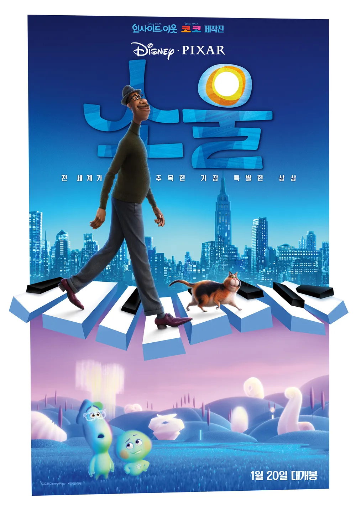
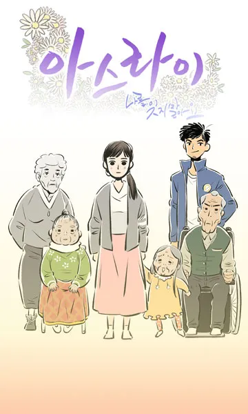

각 작품을 클릭하면 자세한 정보를 확인할 수 있습니다.
영화

인사이드 아웃
고양이의 보은

어바웃 타임
로마의 휴일
세 얼간이
바닷마을 다이어리

소울
업
미나리
리틀 포레스트
라따뚜이
마녀 배달부 키키
웹툰
어서와
일상날개짓
집이 없어
어서오세요 305호에

아스라이

ho!
연민의 굴레
움비처럼
애니메이션
코타로는 1인 가구
스킵과 로퍼
바라카몬
충사
빙과
너와 나
은수저
토끼 드롭스